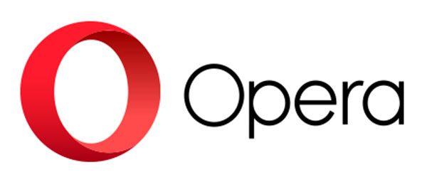
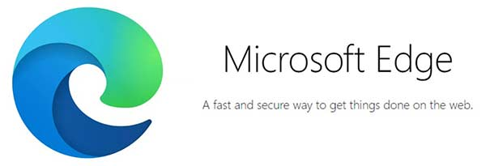

Los Navegadores web más utilizados
Algunos de los navegadores más populares son:
>Google Chrome: Desarrollado por Google, es un navegador sumamente ágil que se puede descargar gratis de internet. Su aparición revolucionó el mundo de los navegadores, y obligó al mercado a hacer programas más livianos y veloces.
Descarga
>Internet Explorer: Desarrollado por Microsoft, fue uno de los primeros exploradores en utilizarse de forma masiva durante la popularización de internet. Aunque todavía se puede utilizar, se considera desplazado por su versión más moderna, Edge.
Descarga
>Mozilla Firefox: Desarrollado por la Fundación Mozilla, fue el primer navegador en contar con un diseño de pestañas que permiten manejar distintas ventanas de navegación al mismo tiempo. Se trata de un navegador de código abierto y altos estándares web.
Descarga
>Apple Safari: Desarrollado por Apple, es un navegador comercial, pero su motor interno se licencia como software libre.
Descarga
>Opera: Desarrollado por la empresa china Golden Brick Capital, es un navegador muy simple y veloz, cuyas características lo hacen ideal para teléfonos inteligentes y tabletas, pues ocupa poco espacio y demanda pocos recursos.

Descarga
>Microsoft Edge: Desarrollado como reemplazo de Internet Explorer, es un navegador basado en la versión de código abierto de Chrome (llamada Chromium), y que contaba inicialmente con un asistente virtual llamado Cortana. Se trata del navegador predeterminado en la mayoría de las versiones de Windows.
